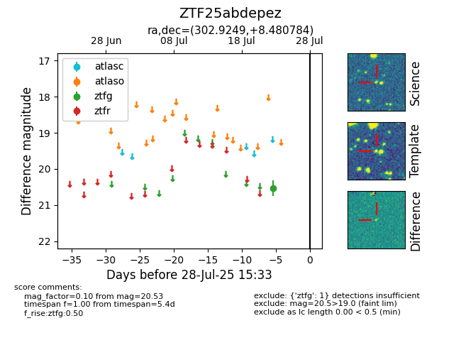

Target ZTF25abdepez at 2025-07-28 15:33, see:
FINK: fink-portal.org/ZTF25abdepez
Lasair: lasair-ztf.lsst.ac.uk/objects/ZTF25abdepez
ALeRCE: alerce.online/object/ZTF25abdepez
alt names
ZTF25abdepez (ztf,fink)
coordinates:
equatorial (ra, dec) = (302.9249,+8.48078)
galactic (l, b) = (50.0421,-13.57762)
photometry
last ztfg=20.53
1 ztfg detections
